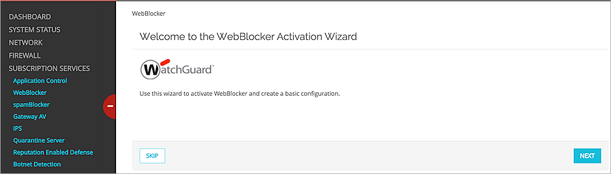

Friendly WiFi Integration Overview
Friendly WiFi® is the world’s first public Wi-Fi accreditation, available to any organization that provides public Wi-Fi access where children could be present. Friendly WiFi compliant organizations can display the Friendly WiFi symbol to indicate that the public wireless network they provide meets the minimum standard of content filtering required to block web sites that contain objectionable and adult content.
WatchGuard is an accredited Friendly WiFi Approved Provider. Customers that use WatchGuard Fireboxes with an active WebBlocker subscription can provide the content filtering required to make sure users cannot access inappropriate content.
You can use the WebBlocker service on your Firebox with these wireless deployments:
- Firebox with built-in wireless
- Firebox with locally managed AP devices
- Firebox with third-party AP devices
When a wireless client tries to connect to a website, the WatchGuard Firebox checks the website URL with the WebBlocker database. If the website is not listed in the database or is not blocked, the page is accessible to the user. If the website appears in the WebBlocker database and is blocked based on the content category of the site, a notification appears and access to the web site is denied.
This document describes how to block inappropriate websites with your Firebox and WebBlocker to satisfy the requirements for using the Friendly WiFi symbol with your public wireless service.
Platform and Software
The hardware and software used to complete the steps outlined in this document include:
- WatchGuard Firebox
- WebBlocker subscription service
- WatchGuard AP devices or third-party AP devices
How WebBlocker Works
- A user sends a URL request to access a website.
- The Firebox sends a URL categorization lookup request to WebBlocker Cloud.
- WebBlocker Cloud sends the lookup response.
- If the website is in a blocked category, a notification appears and the website is not displayed. If the website is not in the database or is not blocked, the page is displayed for the user.

Categorization Database
When you configure WebBlocker, you have two options for the type of WebBlocker database the Firebox uses to control access to web content.
- WebBlocker Cloud database
- On-premises WebBlocker Server
Based on the commitment by the UK for filtering content for standard public wireless access with data provided by the IWF (Internet Watch Foundation), Friendly WiFi chose Websense as the preferred content filtering database because Websense is a member of the IWF and updates its lists based on IWF data.
WebBlocker uses the Websense database.
Configuration
Wireless Configuration and HTTP/HTTPS Policies
You can create HTTP and HTTPS proxy policies on your Firebox to allow clients access to external web sites.
For clients connected to your wireless Firebox, or clients associated to an AP device connected to your Firebox, you must make sure you configure HTTP and HTTPS proxy policies for your wireless interfaces and networks.
When you configure WebBlocker with a list of sites to block, you can apply this WebBlocker action to your HTTP and HTTPS policies to filter the web site content accessed by your wireless clients.
Activate WebBlocker
You can activate and configure WebBlocker in one of these two ways:
- Add a WebBlocker action and applicable HTTP/HTTPS policies, and apply the WebBlocker action to these policies
- Use the WebBlocker Activation Wizard
In this example, we use the WebBlocker Activation Wizard from Fireware Web UI.
- From the Fireware Web UI, select Subscription Services > WebBlocker. If WebBlocker has never been configured, the Activation Wizard is displayed. If you already have WebBlocker actions defined and you want to add a new one, you can click Run Wizard at the bottom of the page to start the Activation Wizard.
- Click Next.

- Type a name for the WebBlocker action or accept the generated name.

- Select the categories you want to deny, then select Deny from the Quick Action drop-down list. To meet the minimum requirements for Friendly WiFi, you must select these categories:
- Sex
- Internet Watch Foundation

- Click Next.
- If you already have HTTP and HTTPS policies to which you want to apply the WebBlocker action, select those policies. Make sure these policies include your wireless interfaces and networks.

- Click Next.
- If you want to create new proxy policies for HTTP and HTTPS access, select the HTTP Client and HTTPS Client check boxes, then click Next. If you do not want to create new proxy policies, click Skip.

Proxy policies for HTTP and HTTPS are created and configured with your WebBlocker action.

- To view the new HTTP and HTTPS proxy policies created by the wizard, select Firewall > Firewall Policies.

Make sure that your Firebox wireless interfaces or interfaces configured for connections to wireless AP devices are included in these HTTP and HTTPS proxy policies.
Test WebBlocker Integration
To test WebBlocker, try to access a website from a wireless client that would be categorized in the Sex or Internet Watch Foundation category. The request should be denied and a notification displayed in the web browser.